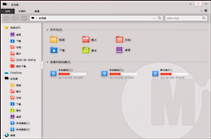

x
作品简介：请点击F11开启全屏模式
该项目开发时间两周多，模拟win10的部分系统功能。并在原基础上做了展示修改！越做越觉得的里面的关联性很强，很有意思，很喜欢这种感觉
主要实现的功能：
- 1.桌面图标的单选，多选(ctrl),框选，拖拽，模糊位置的吸附效果，图标重命名，删除，桌面刷新
- 2.此电脑可以双击打开，在磁盘中可以创建文件夹，删除文件夹，重命名
- 3.QQ音乐双击打开，里面的歌曲可以播放，并通过音频操作，获取音频节点，让音频在canvas上绘制出对应的波动
- 4.桌面图标扔到回收站里可以删除
- 5.右下角的时间是可以点击，做了一个日历，实时更新时间
- 6.桌面的时钟是canvas绘制出来的，根据当前的时间绘制，实时更新，可以拖拽
- 7.桌面、文件夹内容层级都是由虚拟数据生成、操作
- 8.桌面个性化可以根据本地图片换背景图片
运用的知识点
面向对象、函数传参、DOM增删改、BOM右键自定义菜单、事件委托、碰撞检测、拖拽、ES6模板字符串、canvas绘图、HTML5音频audio等等，同时自己封装了好多方法，如数组去重等等
项目不足
由于时间较短，开发过程中并没有考虑兼容性问题，请使用高版本浏览器
点击右下角电脑图标可以查看此文档
此电脑
- ×
<
>
- 此电脑
- 视频
- 图片
- 文档
- 下载
- 音乐
- 桌面
- 本地磁盘(C)
- 本地磁盘(D)
- 本地磁盘(E)
设备和驱动器(3)
文件夹
- ×
<
>
- 此电脑
- 视频
- 图片
- 文档
- 下载
- 音乐
- 桌面
- 本地磁盘(C)
- 本地磁盘(D)
- 本地磁盘(E)
文件夹()
-
文件夹 ×
 -
文件夹 ×
-
11:29
2016/11/12
×
x